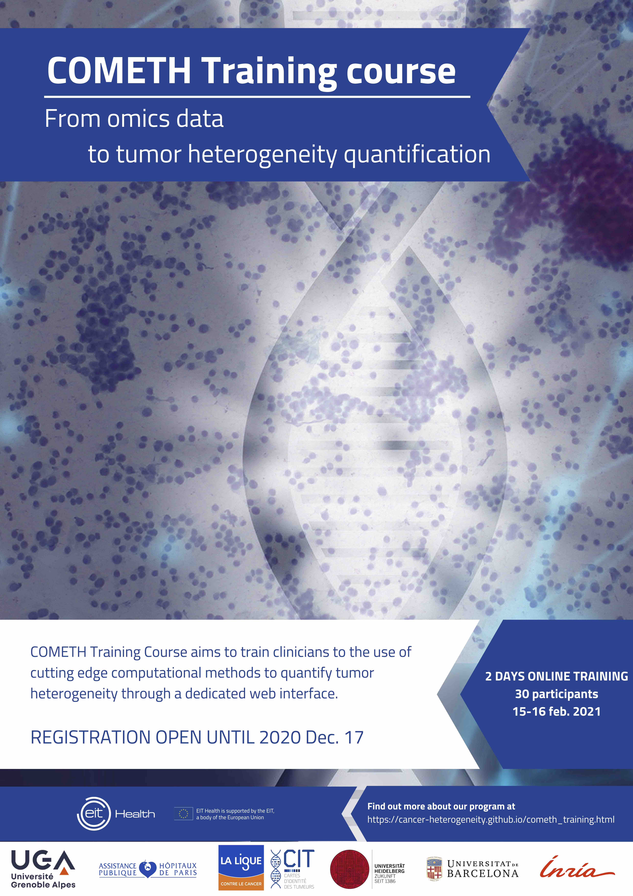
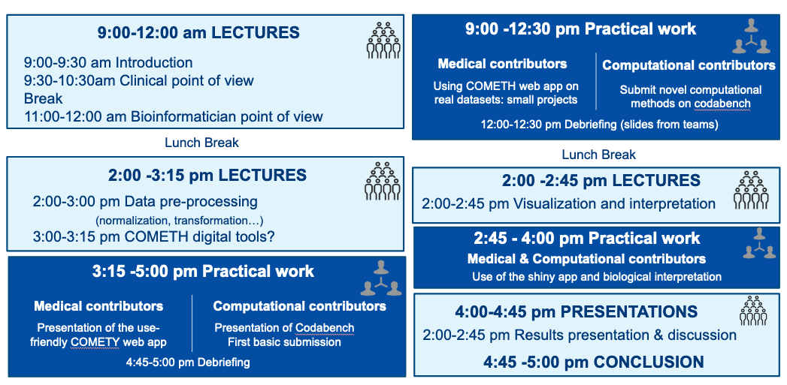

15-16 Feb.2021, ONLINE
This 2-day online course aims to train clinicians to the use of cutting edge computational methods to quantify tumor heterogeneity through a dedicated user-friendly web interface. Â
Registration deadline extension: 10 January 2021
Â

To come
For all participants:
For computational participants:
For clinician participants:
Practictal work will differ according to your affectation (medical or bioinformatic group). Please check your affectation and download the corresponding material.


We have prepared toy datasets from TCGA public cancer database.
Format : .cvs, samples in column, genes in row. If you want to use your own dataset during the course, please use the same format.
Omic type : transcriptome.
TO UPDATE
2-day online sessions with general lectures and practical training.
General lectures will cover:
• Introduction to cancer heterogeneity
• Introduction to computational methods
• Interpretation and visualization of the results

Cancer pathologists
Research scientists
Clinicians
Limited to 30 participants.
Registration is free of charge but mandatory.
Deadline: 10 January 2021
Technical support
Clémentine Decamps, Phd Student, Uni. Grenoble Alpes, France
Yasmina Kermezli, Postdoctoral fellow, Uni. Grenoble Alpes, France